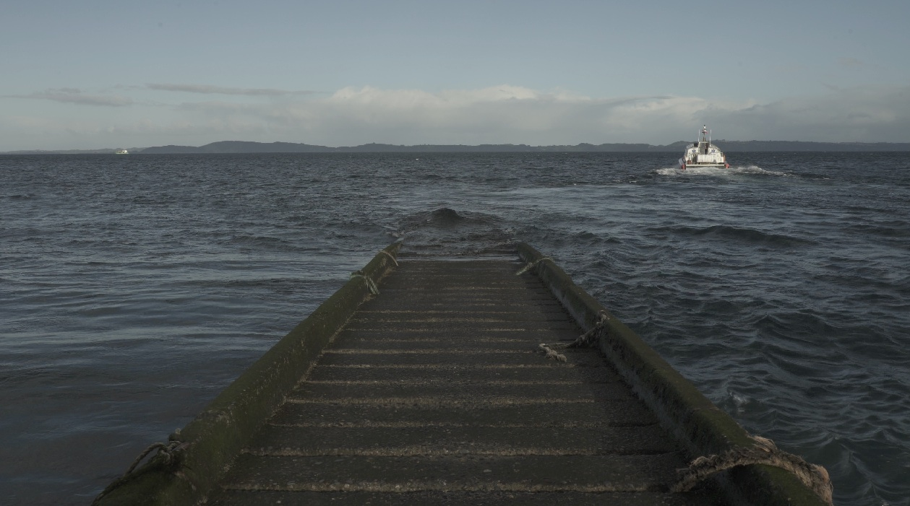
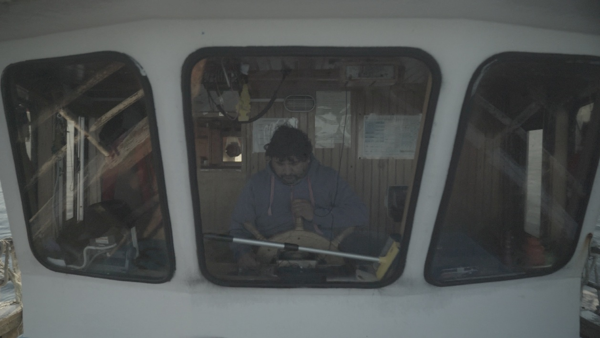

🌿 Patrimonio, territorio y memoria visual
Uno de los principales aportes del proyecto fue la incorporación de estrategias de reutilización de residuos plásticos en los procesos de tejido artesanal. A través de una metodología práctica, las participantes aprendieron a recuperar bolsas y otros materiales plásticos, transformándolos en una fibra flexible y resistente apta para su integración en diversas técnicas de tejido. Esta experiencia permitió vincular la artesanía tradicional con acciones concretas de cuidado ambiental, promoviendo la reducción de residuos y la disminución de la contaminación en el territorio insular.
📸 Registro visual del territorio

